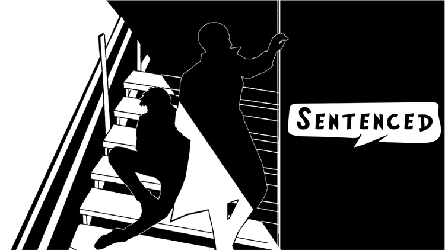

Sentenced

Role: Engineering Lead
Team Size: 14 (3 Engineers)
Software: Unity, Perforce
2D branching visual novel about two brothers finding the truth to a mystery behind their father's disappearance.
My role is the lead engineer. Aside from working on appropriating tasks amongst engineers, I acted as a gameplay and tools engineering. The team used the Fungus visual novel engine and my role as a tools developer is to append the functionality of Fungus engine for designers. As a gameplay engineer, I worked on the matching mechanic and story transitions.